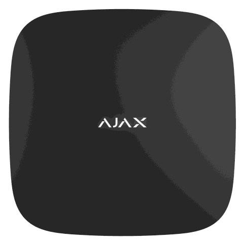
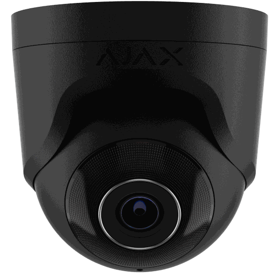
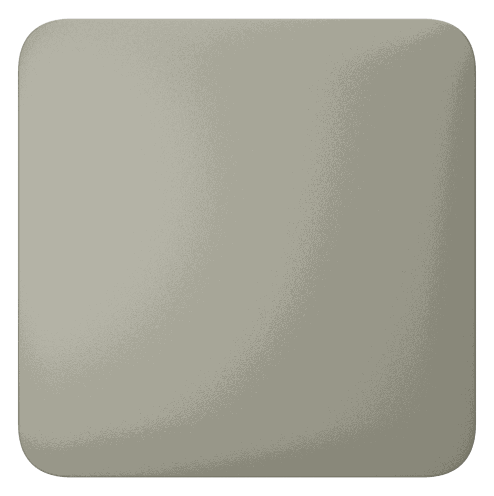

Partenaire agréé Ajax Systems · Toute l’île
Sécurisez votre espace à La Réunion avec Active Sécurité 974
Alarme intrusion, incendie, vidéosurveillance et domotique : un écosystème cohérent, installé et suivi sur toute l’île. Matériel Ajax Systems, marque partenaire.


Étude et devis gratuitsIntervention chez vous, partout sur l’île288 références sur devis
Proposition de valeur
Concevoir, installer, accompagner. Active Sécurité 974 conçoit, installe et accompagne des systèmes de sécurité modernes pour particuliers et professionnels à La Réunion — de Baseline à Superior.
- Une seule interface pour alarme, vidéo, incendie et automatismes
- Étude et devis gratuits, sans engagement
- Intervention sur toute l’île de La Réunion
- Conseil, pose, formation à l’usage, suivi
Pourquoi Ajax Systems
Des avantages techniques vérifiés.
Faits repris du site du fabricant (ajax.systems), reformulés. Chiffres uniquement lorsqu’ils y figurent.
2 000m
Radio Jeweller longue portée
Jusqu’à 2 000 m de communication radio avec une centrale ou un prolongateur de portée, protocole bidirectionnel chiffré.
Source : ajax.systems/fr/products/hub-2/
3réseaux
Multi-canal, toujours connecté
Ethernet + deux cartes SIM (2G/3G/LTE) : jusqu’à trois réseaux indépendants, bascule automatique.
Source : ajax.systems/fr/products/hub-2/
~9s
Photo-vérification
Levée de doute en photos : première image en ~9 s selon les conditions indiquées sur les fiches Hub 2 / MotionCam.
Source : ajax.systems/fr/products/hub-2/ & motioncam-phod/
5ans
Autonomie des piles
Ex. MotionProtect : jusqu’à 5 ans d’autonomie (annonce constructeur) ; piles préinstallées sur de nombreux détecteurs.
Source : ajax.systems/fr/products/motionprotect/
Anti‑
sabotage
Immunité animaux & protection
Algorithmes d’immunité aux animaux de compagnie ; boutons anti-sabotage et chiffrement des échanges radio.
Source : ajax.systems/fr/products/motionprotect/ & motioncam-phod/
Une app.
Tout l’écosystème.
App + OS Malevich
Pilotage smartphone / PC ; OS Malevich avec mises à jour OTA. Écosystème unifié : alarme, vidéo, incendie, domotique.
Source : ajax.systems/fr/products/hub-2/

Pour qui
Particuliers & professionnels.
Particuliers
Votre maison, sereine.
Maison ou appartement : une solution discrète, fiable, pilotable depuis le smartphone.

Professionnels
Votre activité, protégée.
Commerces, bureaux, entrepôts, multi-sites : architecture évolutive, options Superior.

Gammes
Quatre univers. Un seul écosystème.

01 — Alarme intrusion
Chaque accès sous contrôle.
Détection d’intrusion, commandes et sirènes Ajax Systems. Baseline pour l’essentiel sans fil ; Superior pour les architectures plus exigeantes.

02 — Incendie
Détecter tôt. Alerter fort.
Détecteurs de fumée, chaleur, CO et dispositifs associés. Pour les ERP, l’étude intègre vos contraintes sans affirmer une conformité non vérifiée.

03 — Vidéosurveillance
Voir, pour lever le doute.
Caméras IP, sonnette et NVR Ajax Systems, intégrés à l’alarme pour une levée de doute visuelle.

04 — Domotique
Le confort, dans la même app.
Automatismes, prises, relais, fuites d’eau et qualité de l’air : le confort dans la même application que la sécurité.
Baseline ou Superior
Deux niveaux pour coller à votre site.
De l’essentiel sans fil aux projets exigeants. Nous vous orientons lors de l’étude gratuite.
Baseline · 110 références
L’essentiel, sans fil.
Large choix sans fil pour les besoins standards. Déploiement rapide, interface unique, évolutif : idéal pour démarrer et faire grandir votre système.
- Caméras filaires30 réf.
- Détecteurs de mouvements14 réf.
- Enregistreurs vidéo13 réf.
- Centrales8 réf.
Superior · 84 références
Pour les projets exigeants.
Sans fil et/ou filaire, multi-zones, sites sensibles : options avancées selon les références. Sur étude Active Sécurité 974, partenaire agréé Ajax Systems.
- Détecteurs de mouvements16 réf.
- Sirènes9 réf.
- Centrales8 réf.
- Enregistreurs vidéo7 réf.
Catalogue
Matériel sur devis.
Packshots officiels Ajax Systems. Chaque fiche propose « Demander un devis » : pas de panier ni de paiement en ligne.


Process
De la prise de contact au suivi.
- 01
Contact
Formulaire ou téléphone [À COMPLÉTER : téléphone].
- 02
Étude gratuite
Visite ou échanges à distance.
- 03
Devis clair
Sans engagement, prix sur devis.
- 04
Installation
Pose, configuration, formation.
- 05
Suivi
Options de maintenance [À CONFIRMER].
Zone d’intervention
Présents sur toute l’île.
La Réunion, d’un bout à l’autre : Nord, Sud, Est, Ouest et Hauts. Un interlocuteur local pour l’étude, la pose et le suivi, chez vous.
- Nord
- Est
- Sud
- Ouest
- Hauts
Prêt à sécuriser votre espace ?
Étude et devis gratuits. Réponse sous [À COMPLÉTER : délai de réponse]. Partenaire agréé Ajax Systems.